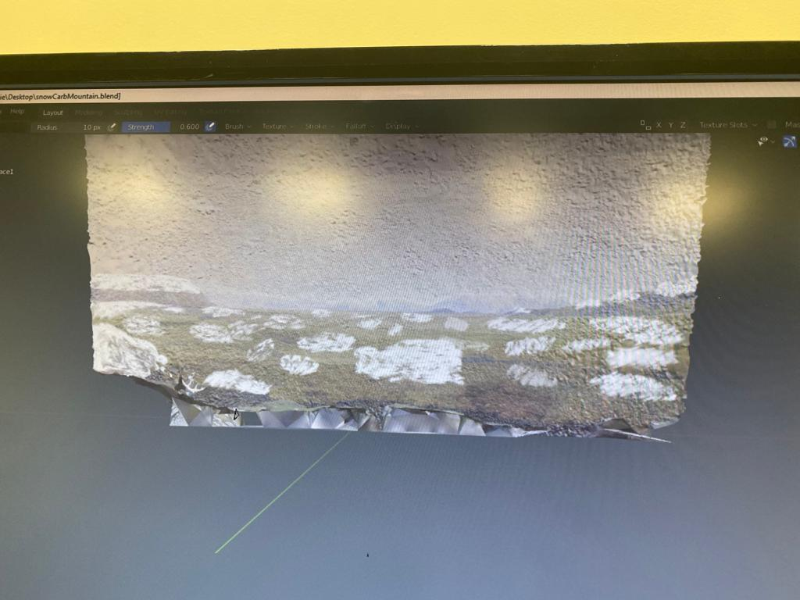

The background of the mesh caribou was cropped out using the multi-cut tool in Maya. This cropped region was then saved as an FBX file. We decided to save it as a FBX file since the material, texture & mesh components get stored into a single file. Following this the FBX file was edited and manipulated using blender. The edited background contains snow on the ground and mountains. We cropped out the point cloud background and replaced it with the mesh background created. A proof of concept involving the changing of camera positions to view different background meshes was implemented.

There was a significant learning curve associated with Maya & Blender. The team spent a significant amount of time understanding how textures & materials operate and work together. When changing camera positions we observed that users position was also getting reset, we felt this can cause motion sickness and discomfort for the user.
Change the textures on a time based trigger.
Work on Narration for the Unreal engine.
Add mud component to the Point Cloud Caribou (stretch goal).